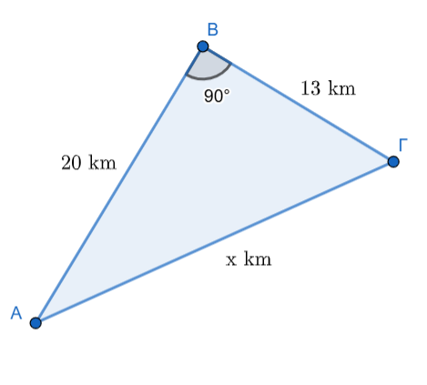
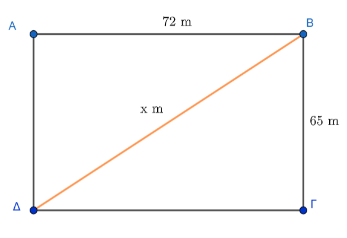

1 Τετραγωνική ρίζα ενός θετικού αριθμού
1.1 Τετραγωνική Ρίζα Θετικού Αριθμού
Θεωρία και Ορισμοί
Ορισμός: Για κάθε πραγματικό αριθμό \(\alpha \ge 0\), υπάρχει ένας και μόνο ένας μη αρνητικός πραγματικός αριθμός \(\beta \ge 0\), τέτοιος ώστε \(\beta^2 = \alpha\),. Αυτός ο μοναδικός αριθμός \(\beta\) ονομάζεται τετραγωνική ρίζα του \(\alpha\) και συμβολίζεται με \(\sqrt{\alpha}\),.
Ορολογία: Στην έκφραση \(\sqrt{\alpha}\), το σύμβολο \(\sqrt{}\) ονομάζεται ριζικό και ο αριθμός \(\alpha\) που βρίσκεται κάτω από αυτό ονομάζεται υπόρριζο.
Πραγματικές τετραγωνικές ρίζες: Κάθε πραγματικός αριθμός \(x\) που ικανοποιεί τη σχέση \(x^2 = \alpha\) ονομάζεται πραγματική τετραγωνική ρίζα του \(\alpha\).
- Αν \(\alpha < 0\), δεν υπάρχει πραγματική τετραγωνική ρίζα, καθώς το τετράγωνο κάθε πραγματικού αριθμού είναι μη αρνητικό (\(x^2 \ge 0\)).
- Αν \(\alpha = 0\), υπάρχει μία μόνο ρίζα, το \(0\) (\(\sqrt{0}=0\)).
- Αν \(\alpha > 0\), υπάρχουν δύο αντίθετες πραγματικές τετραγωνικές ρίζες, οι \(\sqrt{\alpha}\) και \(-\sqrt{\alpha}\),. Για παράδειγμα, οι ρίζες του \(4\) είναι το \(2\) και το \(-2\), όμως το σύμβολο \(\sqrt{4}\) παριστάνει αποκλειστικά τη θετική τιμή, δηλαδή \(\sqrt{4} = 2\),.
Ιδιότητες
Για κάθε πραγματικό αριθμό \(\alpha \ge 0\) και \(\beta > 0\) ισχύουν τα εξής:
Θεμελιώδης ιδιότητα: \((\sqrt{\alpha})^2 = \alpha\) και \(\sqrt{\alpha^2} = \alpha\) (εφόσον \(\alpha \ge 0\)),.
Γενική περίπτωση: Για κάθε πραγματικό αριθμό \(\alpha\) (θετικό ή αρνητικό), ισχύει \(\sqrt{\alpha^2} = |\alpha|\).
Γινόμενο ριζών: \(\sqrt{\alpha} \cdot \sqrt{\beta} = \sqrt{\alpha \cdot \beta}\).
Πηλίκο ριζών: \(\dfrac{\sqrt{\alpha}}{\sqrt{\beta}} = \sqrt{\dfrac{\alpha}{\beta}}\).
Εισαγωγή παράγοντα: \(\beta\sqrt{\alpha} = \sqrt{\beta^2\alpha}\) (αν \(\beta \ge 0\)) και \(\beta\sqrt{\alpha} = -\sqrt{\beta^2\alpha}\) (αν \(\beta < 0\)),.
Δύναμη ρίζας: \((\sqrt{\alpha})^\nu = \sqrt{\alpha^\nu}\) για κάθε φυσικό αριθμό \(\nu\).
Τέλεια τετράγωνα: Οι αριθμοί των οποίων η τετραγωνική ρίζα είναι ακέραιος (π.χ. \(1, 4, 9, 16, \dots\)) ονομάζονται τέλεια τετράγωνα. Αν ένας φυσικός αριθμός \(k\) δεν είναι τέλειο τετράγωνο, τότε η \(\sqrt{k}\) είναι άρρητος αριθμός,.
Παραδείγματα
- Υπολογισμός: \(\sqrt{49} = 7\), επειδή \(7^2 = 49\) και \(7 > 0\).
- Απόλυτη τιμή: \(\sqrt{(-5)^2} = |-5| = 5\).
- Γινόμενο: \(\sqrt{2} \cdot \sqrt{8} = \sqrt{2 \cdot 8} = \sqrt{16} = 4\),.
- Πηλίκο: \(\dfrac{\sqrt{18}}{\sqrt{2}} = \sqrt{\dfrac{18}{2}} = \sqrt{9} = 3\).
- Εξίσωση: Η εξίσωση \(x^2 = 36\) έχει δύο λύσεις, τις \(x = \sqrt{36} = 6\) και \(x = -\sqrt{36} = -6\).
- Υπολογισμός Ριζών Φυσικών Αριθμών: Να βρεθούν οι αριθμοί \(\sqrt{25}, \sqrt{49}, \sqrt{64}, \sqrt{121}\).
- Λύση: Αναζητούμε θετικούς αριθμούς που το τετράγωνό τους δίνει την υπόρριζη ποσότητα.
- \(5^2 = 25\), άρα \(\sqrt{25} = 5\).
- \(7^2 = 49\), άρα \(\sqrt{49} = 7\).
- \(8^2 = 64\), άρα \(\sqrt{64} = 8\).
- \(11^2 = 121\), άρα \(\sqrt{121} = 11\).
- Λύση: Αναζητούμε θετικούς αριθμούς που το τετράγωνό τους δίνει την υπόρριζη ποσότητα.
- Υπολογισμός Ριζών Δεκαδικών Αριθμών: Να υπολογιστούν οι ρίζες \(\sqrt{16}, \sqrt{0,16}, \sqrt{0,0016}\).
- Λύση:
- \(4^2 = 16\), άρα \(\sqrt{16} = 4\).
- \((0,4)^2 = 0,16\), άρα \(\sqrt{0,16} = 0,4\).
- \((0,04)^2 = 0,0016\), άρα \(\sqrt{0,0016} = 0,04\).
- Λύση:
- Εύρεση Πλευράς σε Ορθογώνιο Τρίγωνο: Σε ορθογώνιο τρίγωνο η υποτείνουσα είναι \(3,5\) και η μία κάθετη πλευρά \(2,8\). Να βρεθεί η άλλη κάθετη πλευρά \(\beta\).
- Λύση: Από το Πυθαγόρειο θεώρημα ισχύει \(\beta^2 + 2,8^2 = 3,5^2\).
- \(\beta^2 + 7,84 = 12,25 \Rightarrow \beta^2 = 4,41\).
- Επομένως, \(\beta = \sqrt{4,41} = 2,1\).
- Λύση: Από το Πυθαγόρειο θεώρημα ισχύει \(\beta^2 + 2,8^2 = 3,5^2\).
- Υπολογισμός Υποτείνουσας: Σε ορθογώνιο τρίγωνο οι κάθετες πλευρές είναι \(15\text{ cm}\) και \(20\text{ cm}\). Να υπολογιστεί η υποτείνουσα \(B\Gamma\).
- Λύση: Από το Πυθαγόρειο θεώρημα έχουμε \(B\Gamma^2 = 15^2 + 20^2\).
- \(B\Gamma^2 = 225 + 400 = 625\).
- Άρα, \(B\Gamma = \sqrt{625} = 25\text{ cm}\).
- Λύση: Από το Πυθαγόρειο θεώρημα έχουμε \(B\Gamma^2 = 15^2 + 20^2\).
- Προσέγγιση Άρρητου Αριθμού: Να βρεθεί η ρητή προσέγγιση του \(\sqrt{13}\) με τρία δεκαδικά ψηφία.
- Λύση: Με διαδοχικές δοκιμές τετραγώνων βρίσκουμε ότι \(3,605^2 = 12,996\) και \(3,606^2 = 13,003\).
- Άρα, η προσέγγιση του \(\sqrt{13}\) είναι \(3,605\).
Ασκήσεις
- Βρείτε την τετραγωνική ρίζα των αριθμών: \(1764, 3844, 5625\).
- Υπολογίστε τις ρίζες των κλασμάτων: \(\dfrac{81}{256}\) και \(\dfrac{1296}{1681}\).
- Βρείτε την τιμή της \(\sqrt{13,69}\) και της \(\sqrt{0,0361}\).
- Απλοποιήστε την παράσταση: \(2\sqrt{27} - \sqrt{12} + 2\sqrt{3} - 3\sqrt{48}\).
- Υπολογίστε το εξαγόμενο: \(\sqrt{3\sqrt{2}+2\sqrt{3}} \cdot \sqrt{3\sqrt{2}-2\sqrt{3}}\).
- Μετατρέψτε το κλάσμα \(\dfrac{6}{\sqrt{3}}\) σε ισοδύναμο με ρητό παρονομαστή.
- Απλοποιήστε την έκφραση: \(\sqrt{(1-\sqrt{2})^2} - \sqrt{(1+\sqrt{2})^2}\).
- Βρείτε την πλευρά τετραγώνου που έχει εμβαδόν \(2809\ \text{m}^2\).
- Αν \(x = \sqrt{12} - \sqrt{6}\), υπολογίστε την τιμή του \(x^2\).
- Υπολογίστε κατά προσέγγιση εκατοστού την \(\sqrt{62}\) (γνωρίζοντας ότι \(7 < \sqrt{62} < 8\)).
1.2 Λυμένα Προβλήματα
Αρχιτεκτονική (Τετραγωνική Βάση): Μια αρχιτέκτων πρέπει να χτίσει σπίτι με τετραγωνική βάση εμβαδού \(289\text{ m}^2\). Ποιο πρέπει να είναι το μήκος \(x\) κάθε πλευράς;
- Λύση: Το εμβαδό τετραγώνου είναι \(E = x^2\).
- Πρέπει \(x^2 = 289\), οπότε αναζητούμε την τετραγωνική ρίζα του \(289\).
- Με δοκιμές βρίσκουμε ότι \(17^2 = 289\), άρα \(x = \sqrt{289} = 17\text{ m}\).
Χωροταξία (Μεταφορά Επίπλου): Μπορούμε να σηκώσουμε όρθιο ένα ντουλάπι ύψους \(2,1\text{ m}\) και πλάτους \(0,7\text{ m}\) σε ένα δωμάτιο ύψους \(2,2\text{ m}\);
- Λύση: Για να σηκωθεί, πρέπει η διαγώνιος \(\delta\) του ντουλαπιού να είναι μικρότερη ή ίση με το ύψος του δωματίου (\(2,2\text{ m}\)).
- \(\delta^2 = 2,1^2 + 0,7^2 = 4,41 + 0,49 = 4,90\).
- \(\delta = \sqrt{4,90} \approx 2,21\text{ m}\).
- Επειδή \(2,21 > 2,2\), δεν μπορούμε να σηκώσουμε όρθιο το ντουλάπι.
Γεωγραφία/Αποστάσεις (Οδοιπορικό): Κατά τη μετακίνηση από την πόλη Α στην πόλη Β (\(20\text{ km}\)) και μετά στο χωριό Γ (\(13\text{ km}\)), όπου οι διαδρομές είναι κάθετες, ποια είναι η απόσταση ΑΓ;

- Λύση: Η απόσταση ΑΓ είναι η υποτείνουσα ορθογωνίου τριγώνου.
- \(A\Gamma^2 = 20^2 + 13^2 = 400 + 169 = 569\).
- Άρα, \(A\Gamma = \sqrt{569} \approx 23,85\text{ km}\).
1.3 Ασκήσεις για Εξάσκηση
1.3.1 Α. Υπολογισμός Ριζών
Να υπολογίσετε τις ρίζες: \(\sqrt{81}\), \(\sqrt{0,81}\) και \(\sqrt{8100}\).
Να βρείτε τις τιμές: \(\sqrt{121}\), \(\sqrt{1,21}\) και \(\sqrt{0,0121}\).
Να υπολογίσετε τα πηλίκα: \(\sqrt{\dfrac{9}{4}}\) και \(\sqrt{\dfrac{144}{25}}\).
Υπολογίστε τις τιμές: \(\sqrt{4}\), \(\sqrt{0,04}\), \(\sqrt{400}\) και \(\sqrt{40000}\).
Υπολογίστε τις τιμές των παραστάσεων: \(\sqrt{\dfrac{400}{49}}\) και \(\sqrt{\dfrac{36}{121}}\).
Υπολογίστε τους αριθμούς: \(\sqrt{36}\) και \(\sqrt{18+18}\).
Βρείτε το αποτέλεσμα των πράξεων: \(\sqrt{18 \cdot 18}\) και \((\sqrt{18})^2\).
Λύστε τις παρακάτω εξισώσεις για θετικό \(x\):
\(x^2 = 16\)
\(x^2 = 121\).
Υπολογίστε με προσέγγιση τριών δεκαδικών ψηφίων τις ρίζες: \(\sqrt{3}\), \(\sqrt{50}\) και \(\sqrt{72}\).
Υπολογίστε την τιμή της σύνθετης παράστασης: \(\sqrt{7+\sqrt{2+\sqrt{1+\sqrt{9}}}}\)
Να υπολογίσετε το αποτέλεσμα της παράστασης: \(\sqrt{32+32}\) και \(\sqrt{12 \cdot 12}\).
Να αποδείξετε ότι: \(\sqrt{\sqrt{4} + \sqrt{9} + 2} = 2\).
Να συμπληρώσετε τον κατάλληλο αριθμό στο κουτάκι ώστε να ισχύει: \((\sqrt{x})^2 = 5\).
Να λύσετε τις εξισώσεις: (α) \(x^2 = 9\), (β) \(x^2 = 64\), (γ) \(x^2 = \dfrac{100}{81}\).
1.4 Β. Προβλήματα
Πρόβλημα Κατασκευής: Μια αρχιτέκτονας πρέπει να χτίσει ένα σπίτι με τετραγωνική βάση εμβαδού 289 \(m^2\). Ποιο πρέπει να είναι το μήκος \(x\) κάθε πλευράς της βάσης;.
Προσέγγιση Πλευράς: Ένα τετράγωνο έχει εμβαδόν 12 \(cm^2\). Να βρείτε, με προσέγγιση εκατοστού, το μήκος της πλευράς του.
Πυθαγόρειο Θεώρημα: Σε ένα ορθογώνιο τρίγωνο η υποτείνουσα είναι 13 cm και η μία κάθετη πλευρά έχει μήκος 5 cm. Χρησιμοποιήστε την τετραγωνική ρίζα για να βρείτε το μήκος της άλλης κάθετης πλευράς.
Πυθαγόρειο Θεώρημα: Σε ορθογώνιο τρίγωνο οι κάθετες πλευρές είναι \(3\text{ cm}\) και \(4\text{ cm}\). Να υπολογίσετε την υποτείνουσα χρησιμοποιώντας ρίζα.
Να βρείτε τη διαγώνιο ενός ορθογωνίου γηπέδου με διαστάσεις \(65\text{ m}\) και \(72\text{ m}\).

1.5 Ερωτήσεις Κατανόησης (Σωστό/Λάθος)
- Η σχέση \(\sqrt{16} = 8\) είναι σωστή; (Λάθος, είναι 4).
- Ισχύει ότι \(\sqrt{16+9} = 5\); (Σωστό, γιατί \(\sqrt{25} = 5\)).
- Υπάρχει η ρίζα \(\sqrt{-9}\); (Λάθος, δεν υπάρχει για αρνητικούς).
- Αν \(x > 1\), τότε \(\sqrt{x} < x < x^2\); (Σωστό)
- Σχέση \(y = \sqrt{x}\): Αν \(y = \sqrt{x}\) για δύο αριθμούς \(x, y\), ο αριθμός \(x\) πρέπει να είναι πάντα θετικός ή μηδέν. Στην περίπτωση αυτή, επιλέξτε ποια από τις παρακάτω σχέσεις ισχύει: α) \(x^2 = y\), β) \(y^2 = x\) ή γ) \(x^2 = y^2\).
- Λύσεις Εξίσωσης: Η εξίσωση \(x^2 = 16\) έχει ως λύσεις: α) μόνο το 4, β) μόνο το -4, ή γ) το 4 και το -4;.
- Αντιστοίχιση Ριζών: Αντιστοιχίστε τους αριθμούς της πρώτης στήλης με την τετραγωνική τους ρίζα στη δεύτερη στήλη:
| Αριθμοί | Τετραγωνική ρίζα |
|---|---|
| 81 | 7 |
| 16 | 9 |
| 49 | 4 |
| 25 | 12 |
| 144 | 5 |
- Έλεγχος Ισοτήτων: Χαρακτηρίστε τις παρακάτω προτάσεις ως Σωστές (Σ) ή Λανθασμένες (Λ):
- \(\sqrt{16} = 8\).
- \(\sqrt{9} = 3\).
- \(\sqrt{0,4} = 0,2\).
- \(\sqrt{100} = 50\).
- Ρίζα Αθροίσματος: Εξετάστε αν η πρόταση \(\sqrt{16+9} = 5\) είναι σωστή και εξηγήστε αν το αποτέλεσμα της ρίζας ενός αθροίσματος ισούται με το άθροισμα των ριζών των προσθετέων.
- Ρίζες Αρνητικών Αριθμών: Εξηγήστε γιατί η παράσταση \(\sqrt{-9}\) δεν έχει νόημα στο σύνολο των πραγματικών αριθμών.
- Εύρεση Αγνώστου \(x\): Αν γνωρίζετε ότι \(\sqrt{x} = 9\), ποια είναι η τιμή του \(x\); Επιλέξτε ανάμεσα στα:
- α) 3,
- β) 81,
- γ) ±81,
- ή δ) η σχέση είναι αδύνατη.
- Ύπαρξη Λύσης: Είναι δυνατόν να βρεθεί θετικός αριθμός \(x\) τέτοιος ώστε \(\sqrt{x} = -16\); Δικαιολογήστε την απάντησή σας.
- Προσέγγιση Άρρητων: Αν ο αριθμός \(\sqrt{2}\) βρίσκεται ανάμεσα στο 1,41 και το 1,42, πώς ονομάζονται οι αριθμοί 1,41 και 1,42 σε σχέση με τη \(\sqrt{2}\);.
- Σύγκριση Μεγεθών: Αν ένας αριθμός \(a\) είναι μεγαλύτερος από το 1 (π.χ. \(a=9\)), τοποθετήστε σε σειρά από τον μικρότερο στον μεγαλύτερο τους αριθμούς \(\sqrt{a}, a, a^2\).
ΚΑΛΗ ΜΕΛΕΤΗ !